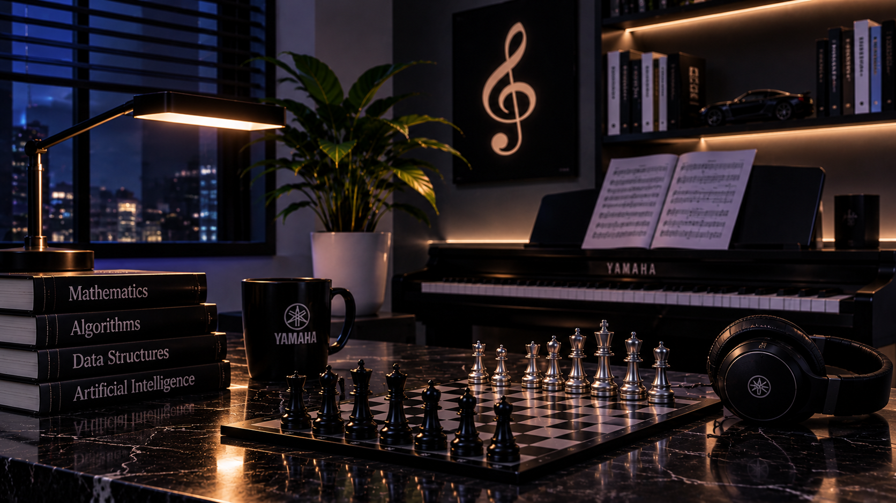
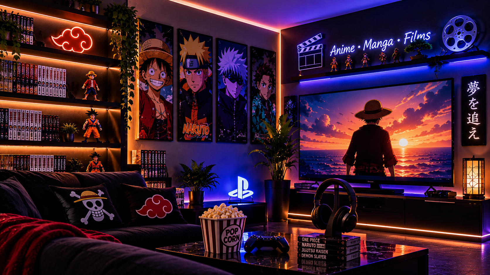
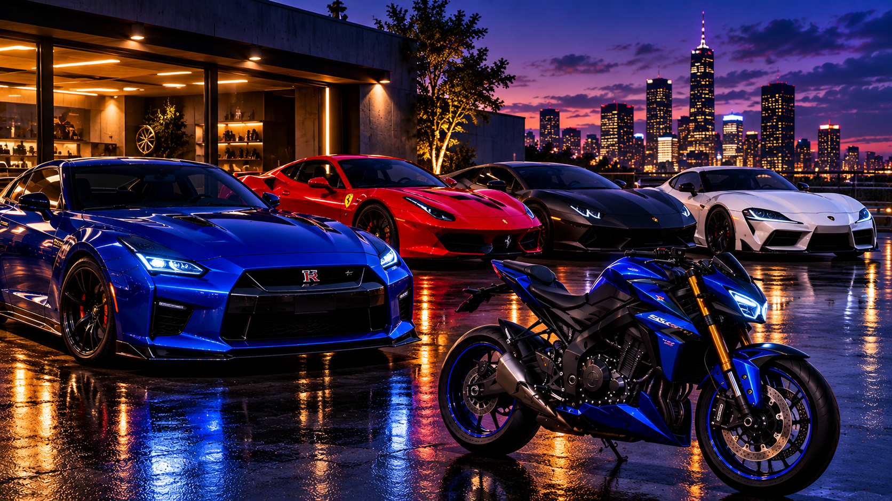

Je suis AGBEYIBOR Clarissio je suis en première année de lience Math-Info à Ipnet institute of Technology...

Je suis quelqu'un de très curieux, qui aime découvrir, apprendre et expérimenter de nouvelle choses surtout dans les domaines de l'informatique.
Pendant mes temps libre, je pratique le Muay Thai,
un sport dans lequel j'ai un très bon niveau et que je maitrise particulièrement

je m'intéresse également à la musique et j'apprends à jouer du piano.
j'aime aussi les jeux de chasse au trésor, les énigmes et les activités qui stimulent ma curiosité et me force à être responsable et à prendre des décisions réfléchies.

Les animes, mangas et les films occupent également une place importante dans mes divertissements, surtout lorsqu'ils proposent des histoires captivantes et pleines de suspense.

Enfin, je suis passionné par les automobiles, en particulier les voitures sportives et les motos. Ce sont des véhicules que j'ai l'intention d'acquérir one day, et pas seulement d'admirer.
Ces centres d'intérêt m'aident à développer mes compétences et à rester motivé dans mes études.